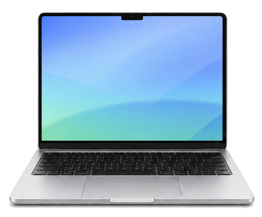
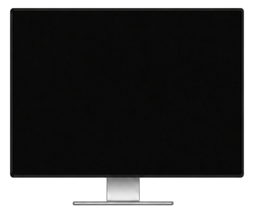

ScreenDark for Mac
运行安装脚本
获取源码后，在项目根目录运行：
bash reinstall.sh需要 macOS 13+ 和 Xcode Command Line Tools。脚本会构建 Release、安装到 ~/Applications 并自动启动。
Mac 多显示器黑屏工具
锁屏可能中断 Codex、Claude Code 和 Computer Use；调暗内建屏幕，外接显示器却往往还亮着。ScreenDark 不主动锁屏，只让选中的内建或外接显示器变暗；全部显示器变暗时会阻止空闲系统睡眠，帮助当前任务继续运行。
安装 ScreenDark

使用方法
点击内建或外接显示器，可分别控制。
按下 ⌃⌥⌘B，恢复各屏此前的亮度。
安装
ScreenDark for Mac
获取源码后，在项目根目录运行：
bash reinstall.sh需要 macOS 13+ 和 Xcode Command Line Tools。脚本会构建 Release、安装到 ~/Applications 并自动启动。
Codex Skill
Skill 包含单块显示器变暗、全部恢复和安全边界。
查看 ScreenDark Skill将文件保存为 ~/.codex/skills/screendark/SKILL.md，新建任务后即可使用。